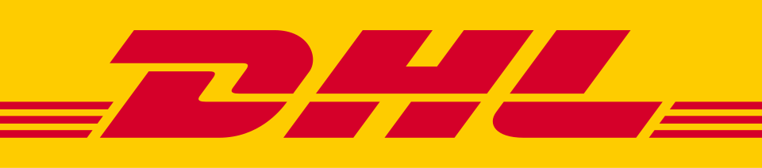

DHL
DHL(DHL)은 독일 도이체 포스트의 국제 운송 사업 부문이자 브랜드로, 독일에 본사를 두고 여러 국가와 도시를 연결하는 국제 택배와 화물 운송 서비스를 운영한다.
최종 업데이트

DHL는 어떤 브랜드인가
DHL은 도이체 포스트 DHL 그룹에서 국제 운송 사업을 담당하는 브랜드이다. 미국에서 출발했으나 도이체 포스트의 지분 인수를 거쳐 국적과 본사를 독일로 옮겼으며, 현재 모기업은 도이체 포스트이다.
미국 본토와 하와이 호놀룰루 사이의 택배 운송에서 시작해 극동·태평양, 유럽, 남아메리카, 중동과 아프리카로 서비스 지역을 넓히며 국제 택배 기업으로 성장했다. 2003년 도이체 포스트 월드넷 및 단자스와 합병했으며, 220여 개국과 12만이 넘는 도시에서 화물을 취급한다.
대한민국에서는 1977년 일양해운과 대리점 계약을 체결했고 2001년 합작투자 형태의 DHL Korea를 출범했다.
DHL는 어떻게 시작되고 성장했나
1969년 Adrian Dalsey, Larry Hillblom, Robert Lynn이 미국 샌프란시스코에서 회사를 설립했다. Larry Hillblom과 Adrian Dalsey는 호놀룰루와 로스앤젤레스 사이에서 첫 고객 시트레인 라인즈의 선하증권을 운송하며 사업을 시작했다.
창업자들은 자동차를 공유하고 서류가방에 문서를 담아 공항으로 운반했으며, 회사명은 세 사람의 성씨 첫 글자에서 만들었다. 이후 미국 본토와 하와이 사이의 택배에서 출발해 1970년대 극동·태평양, 일본, 홍콩, 싱가포르, 호주, 유럽, 남아메리카, 중동과 아프리카로 사업을 확대했다.
DHL의 브랜드 아이덴티티는 무엇인가
창업자 세 사람의 성씨 첫 글자를 이름으로 삼고, 문서 운송에서 출발해 광범위한 국제 택배·화물 운송망으로 확장한 점이 구분점이다.
DHL의 대표 제품과 서비스는 무엇인가
DHL의 핵심 서비스는 문서우편, 소포, 택배물과 화물을 국내외 목적지로 운송하는 사업이다. 초기에는 선하증권과 같은 문서를 항공편으로 전달했으며, 이후 미국과 아시아를 연결하는 화물 운송과 세계 여러 지역의 국제 택배를 다루는 체계로 확대했다.
항공기와 차량, 각지의 사무소로 구성된 운송망을 통해 220여 개국과 12만이 넘는 도시에서 화물을 취급한다. 대한민국에서는 일양해운과의 계약을 통한 대리점 사업을 거쳐 DHL Korea를 출범해 현지 운송 서비스를 운영한다.
DHL는 지금 어떤 상태인가
현재 DHL의 모기업은 도이체 포스트이며 본사 소재지는 포스트 타워이다. 380,000명의 직원과 약 6,500개의 사무소, 420대 이상의 항공기, 76,200대의 차량을 기반으로 220여 개국과 12만이 넘는 도시를 연결한다.
연간 취급 화물은 15억 개 이상이다.
DHL 로고는 어떻게 변해왔나
자주 묻는 질문
DHL는 어느 나라 브랜드인가요?
DHL는 독일의 브랜드·비즈니스 브랜드입니다.
DHL는 언제 설립되었나요?
DHL는 1969년 설립되었습니다.
DHL의 브랜드 아이덴티티는 무엇인가요?
창업자 세 사람의 성씨 첫 글자를 이름으로 삼고, 문서 운송에서 출발해 광범위한 국제 택배·화물 운송망으로 확장한 점이 구분점이다.
DHL의 대표 제품은 무엇인가요?
DHL의 핵심 서비스는 문서우편, 소포, 택배물과 화물을 국내외 목적지로 운송하는 사업이다.
DHL는 어느 기업이 소유하고 있나요?
현재 DHL의 모기업은 도이체 포스트이며 본사 소재지는 포스트 타워이다.
DHL의 창업자는 누구인가요?
DHL의 창업자는 Adrian Dalsey, Larry Hillblom, Robert Lynn입니다(위키데이터 기준).
DHL의 본사는 어디에 있나요?
DHL의 본사는 포스트 타워에 있습니다(위키데이터 기준).
출처와 검증
DHL 관련 참고: 공식 웹사이트 · 위키데이터 Q489815 · 한국어 위키백과 · 영어 위키백과. 브랜드명은 한글과 원어를 함께 표기하되 데이터에 없는 표기는 만들지 않습니다. 기원 국가·설립연도는 검수된 정의문에서 확인된 값을 우선하고, 없을 때만 공식 웹사이트 URL이 일치하는 위키데이터 개체의 값을 씁니다. 위키데이터 값은 2026-09-20 기준입니다.